Evidence Terminal · Guide
How to use rm8tes
Everything to know before your deposit is on the line: how to set yourself up, how to size up a flat while you are standing in it, how to photograph the one you take so the record still means something eight months later, and what to do at the other end — the move-out, the money, and the pack that backs it all up.
Every screen below is the app itself, not a mock-up. rm8tes is in private beta, so a detail may move — if something on your phone disagrees with a picture here, trust your phone and tell us.
- 01 · Your profile
- 02 · The viewing checklist
- 03 · Move-in photos
- 04 · The move-out audit
- 05 · Your deposit outcome
- 06 · Understanding your evidence pack
Part 01
Create your profile
One account, one profile, and you are in. It takes about a minute, and nothing else in the app opens until it exists.
-
Step 01
Open the app and pick a door
FIND A ROOM if you are looking for somewhere; LIST A ROOM if you have a room to fill. Both go to the same sign-up form — the choice only tells us which way round to show you things later, and you are not stuck with it.
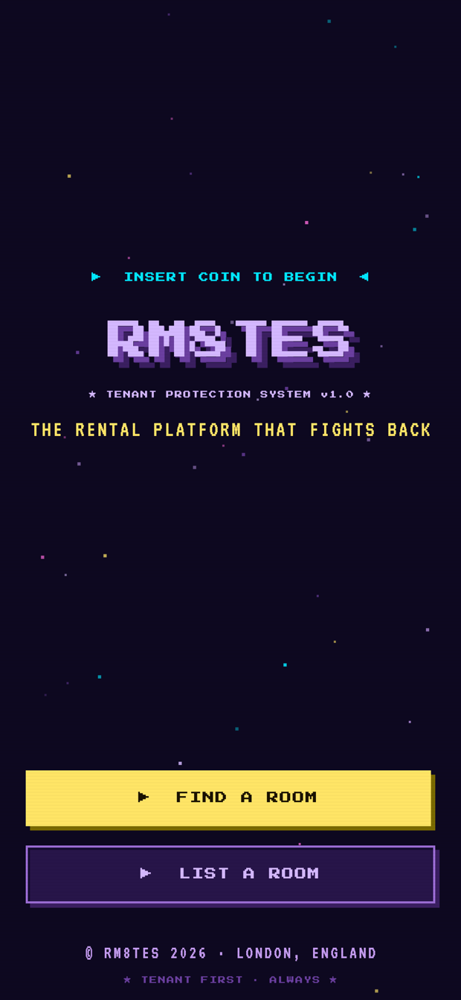
Start screen -
Step 02
Make the account
Your email address, then a password of at least eight characters, typed twice. Tap CREATE ACCOUNT and we email you a confirmation link.
Open that link on the same phone. It is what actually signs you in; opening it on a laptop leaves the app still waiting.
Been here before? ALREADY REGISTERED? LOG IN flips the form over, and FORGOT PASSWORD? sends a reset link to whatever address is in the field — that link only works on the phone you open it on, too.
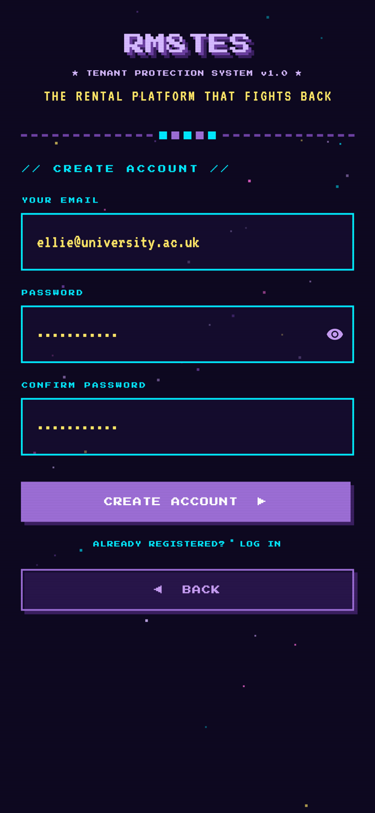
Create account -
Step 03
Add a photo
Tap the tile marked + PHOTO and choose TAKE A PHOTO or CHOOSE FROM GALLERY. It is shrunk on your phone before it uploads, so it will not eat your data.
You can skip it and add one later from the profile screen — but a profile with a face on it gets answered rather more often.
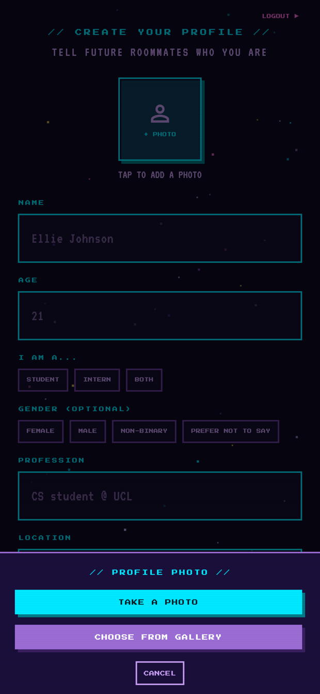
Profile photo -
Step 04
Fill in who you are
Three things are required: NAME, AGE (16 or over), and one of STUDENT / INTERN / BOTH. Gender is optional — tap your answer a second time to clear it again.
Everything else is yours to leave blank: profession, location, monthly budget.
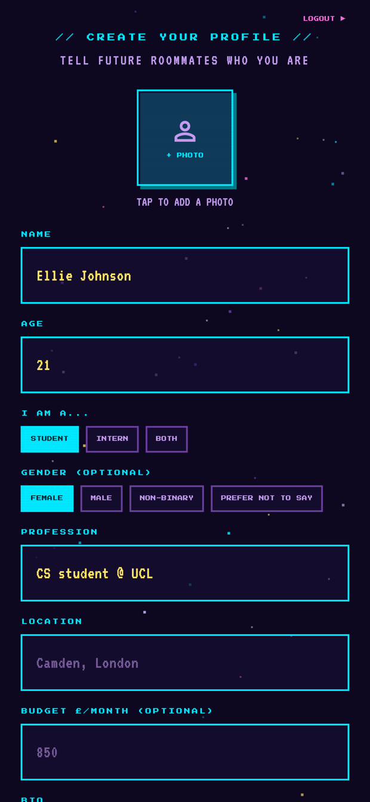
Your details -
Step 05
Say how you live, then save
A short bio (up to 300 characters) and as many LIFESTYLE TAGS as actually fit — non-smoker, tidy, night owl, cooks a lot, and so on. Tap to add, tap again to drop.
SAVE PROFILE writes it and takes you to your home screen.
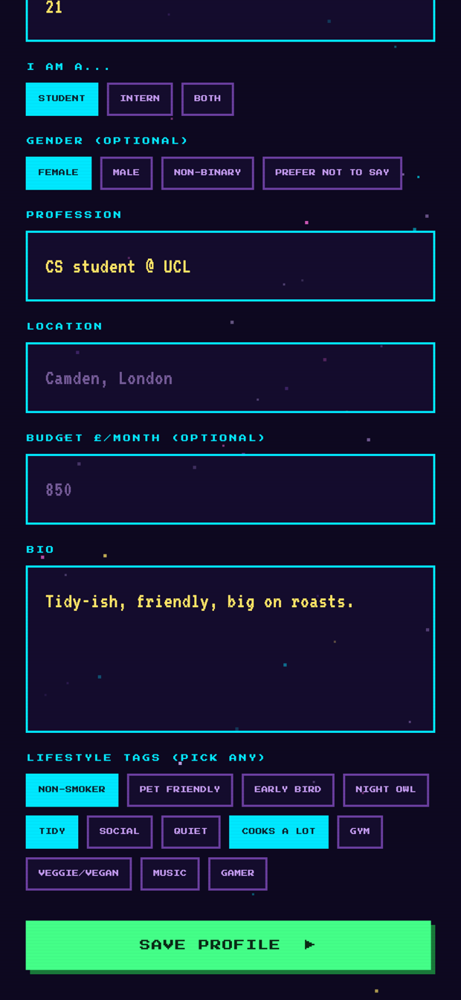
Bio & tags -
Step 06
Where you land
Home is the hub: your property at the top, the menu underneath. With no tenancy yet it says NO ACTIVE FLAT and offers SET UP YOUR TENANCY — do that when you have signed for somewhere, or let a viewing become your flat (that is Part 02).
Your name at the top reopens the profile, where you can edit anything, switch the theme, or delete the account outright.
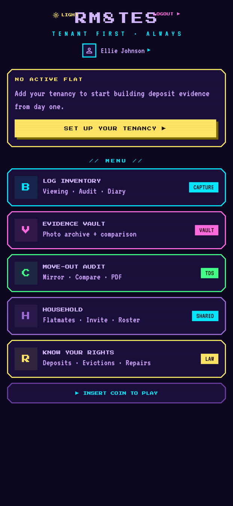
Home, day one
Deleting your account is permanent. It is on the profile screen, it cannot be undone, and it takes your photos with it. If you might still need an evidence pack — for a deposit dispute, say — generate and save the PDF before you delete. See Support.
Part 02
Work the viewing checklist
Eight things worth knowing about a flat that you will not remember to ask about while an agent is walking you round it, and definitely will not remember afterwards when three flats have blurred into one. Keep one checklist per viewing and they stay separate.
You do not need a tenancy for this — it works from your very first viewing, before rm8tes knows where you live.
-
Step 01
Home → LOG INVENTORY → VIEWING CHECKLIST
The log menu holds the three things you capture: VIEWING CHECKLIST, MOVE-IN AUDIT and LIVING DIARY.
The bottom two show a padlock until you have an active flat, because they build evidence against a tenancy. The checklist never locks.
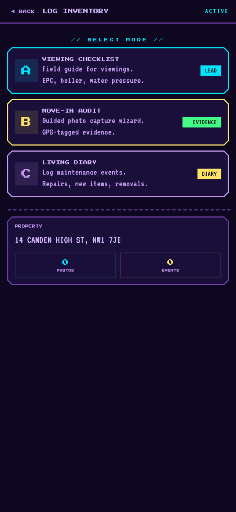
Log inventory -
Step 02
Start a viewing
The first time through, the list is empty. Tap + NEW VIEWING.
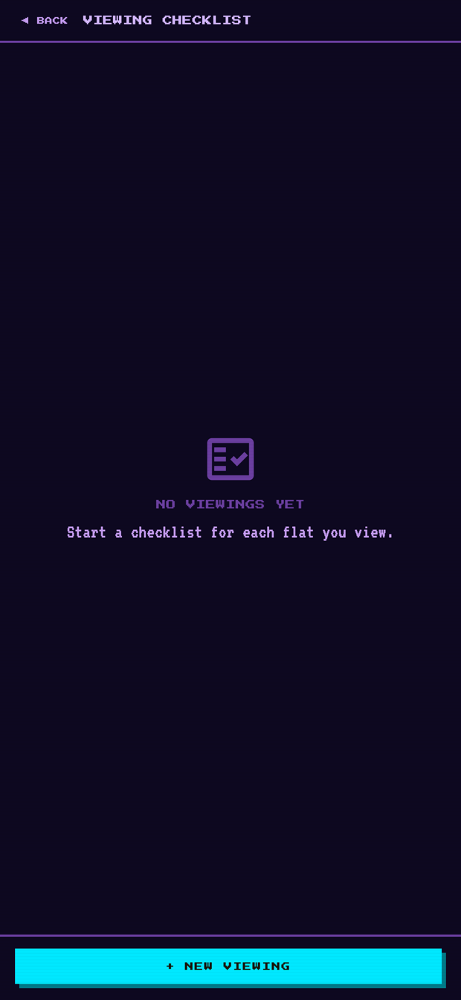
No viewings yet -
Step 03
Name the flat
Type enough of the address to tell it apart from the next one — 14 Camden High St, NW1 beats the one with the blue door when you are comparing four of them on the bus home. Tap START and the checklist opens.
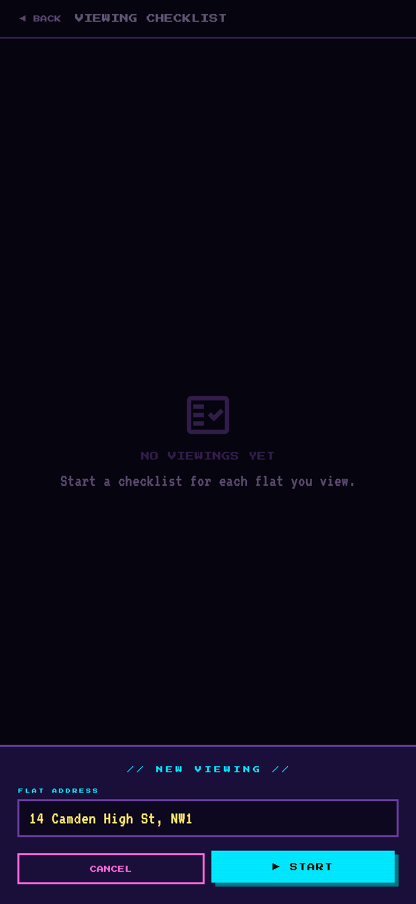
New viewing -
Step 04
Work down it in the flat
Eight prompts, each with a note field, and a counter at the top that fills as you go:
- Water pressure — run the shower
- Boiler age — model and year off the label
- EPC rating — must be E or above to let legally
- Council tax band — it lands on your budget, not the landlord’s
- Mobile signal — check it room by room
- Damp or mould — corners, window seals, behind furniture
- Heating — turn the radiators on and wait
- Broadband speed
The notes are the part that pays off later, so write what you saw, not just that you looked. SAVE CHECKLIST stores it against your account — reopen the flat any time and carry on where you stopped.
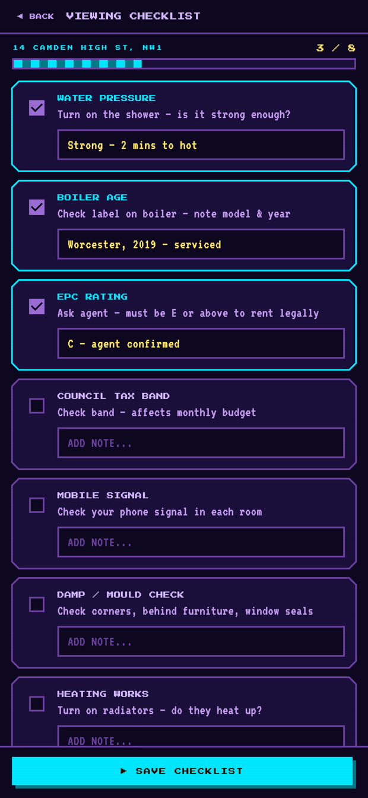
Field guide -
Step 05
Compare them side by side
Every flat you have viewed sits in one list with its date and how far through you got. Tap one to reopen its notes; the bin icon deletes a flat and its checklist for good.
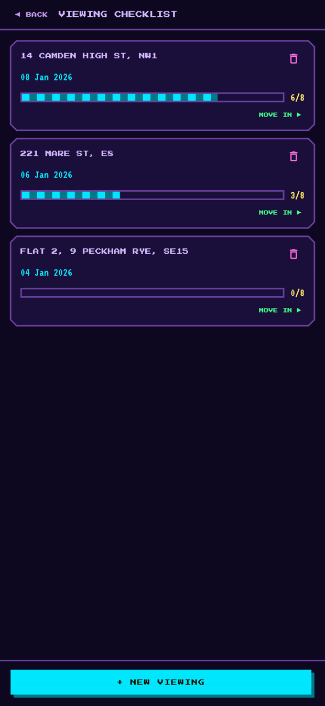
Saved viewings -
Step 06
Turn the one you took into your flat
Signed for it? Tap MOVE IN on that viewing. It asks who holds your deposit, their email (optional, for sign-off later) and how much the deposit is.
The viewing leaves the list and becomes your active property on home — which is what unlocks the move-in audit in Part 03.
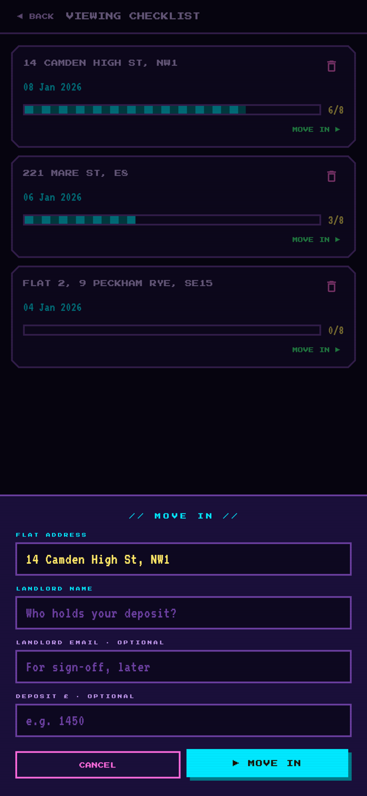
Move in
Part 03
Photograph the flat at move-in
This is the part that gets your deposit back. Eighteen guided shots on the day you move in, each one fingerprinted, time-stamped and located as you take it, then locked so nobody — including us — can quietly change them later. At move-out you shoot the same list again and the two sit side by side. How the proof holds up.
Do it before you unpack. An hour on the day you get the keys is worth more than any argument you can make in June.
-
Step 01
You need an active property first
The audit hangs off a tenancy, so home has to show one: either SET UP YOUR TENANCY straight from home, or MOVE IN from a saved viewing.
Living with other people? Set the flat up once and hand out a join code from the HOUSEHOLD screen. Everyone who redeems it shares the same vault, every photo is credited to whoever took it, and the audit only seals when you all agree it is done. More on households.
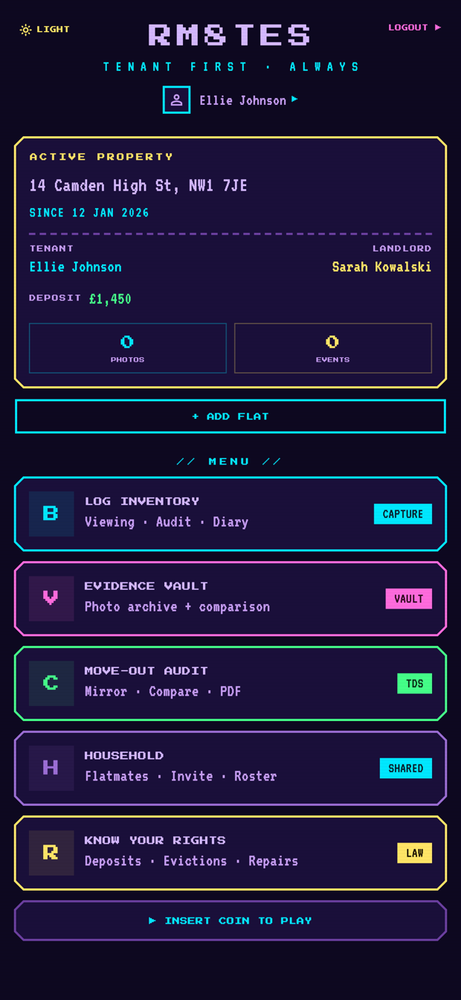
Active property -
Step 02
LOG INVENTORY → MOVE-IN AUDIT
The audit walks you through eighteen prompts, one at a time, in the order you would walk the flat: front door, hallway, living room, bedroom, kitchen, oven and fridge interiors, bathroom, meter readings, anything damp, the garden.
Each screen names the shot and tags it with a category. Nothing to photograph — no garden, no sofa? SKIP moves on. Leave halfway through and it reopens on the first prompt you have not captured.
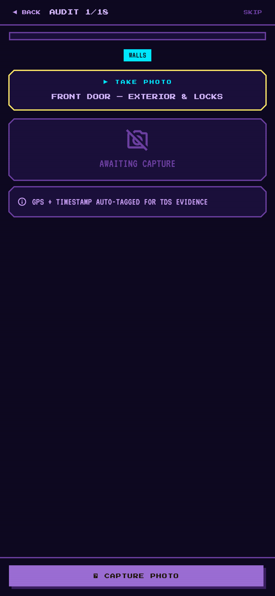
Prompt 1 of 18 -
Step 03
Take the shot
CAPTURE PHOTO opens the camera — and only the camera. There is no “choose from gallery” here on purpose: a photo that could have come from anywhere proves nothing about this flat on this day.
The moment the shutter closes, your phone records the time and asks for a GPS fix, and you get a preview to check before it goes anywhere:
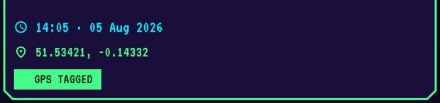
Time, position, and a green badge when the fix landed Blurred, or you caught your own foot? RETAKE replaces it — nothing has been saved yet.
A missing GPS fix never blocks you. Basements, thick walls and blocked location permissions all happen; the badge turns amber and reads NO GPS FIX, and the photo is still perfectly good evidence. The timestamp is the part that carries weight.
-
Step 04
Save it and move on
NEXT — SAVE & CONTINUE uploads the photo and advances to the next prompt. That upload is where the record is actually made: our server recomputes the photo’s fingerprint from the file it received and refuses the whole thing if it disagrees with what your phone sent.
Once a prompt holds a photo, that slot is closed. You cannot swap the shot for a nicer one an hour later, and neither can anyone else — which is exactly why a deposit scheme will take it seriously.
-
Step 05
Finish the round
Work through until the header reads AUDIT COMPLETE and it totals up what you captured. Then GO TO CHECKLIST.
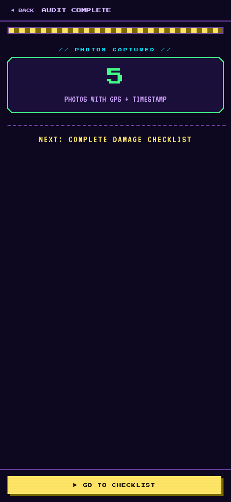
Audit complete -
Step 06
Write down the damage you inherited
Twenty-four rows across six categories — walls, carpet, furniture, appliances, bathroom, kitchen. Tick anything that is already wrong and grade it MINOR, MODERATE or SEVERE. The pills along the top filter by room.
This is the list a landlord will quietly turn into deductions if you never made it. A scuff you photographed and graded on day one is not damage you caused.
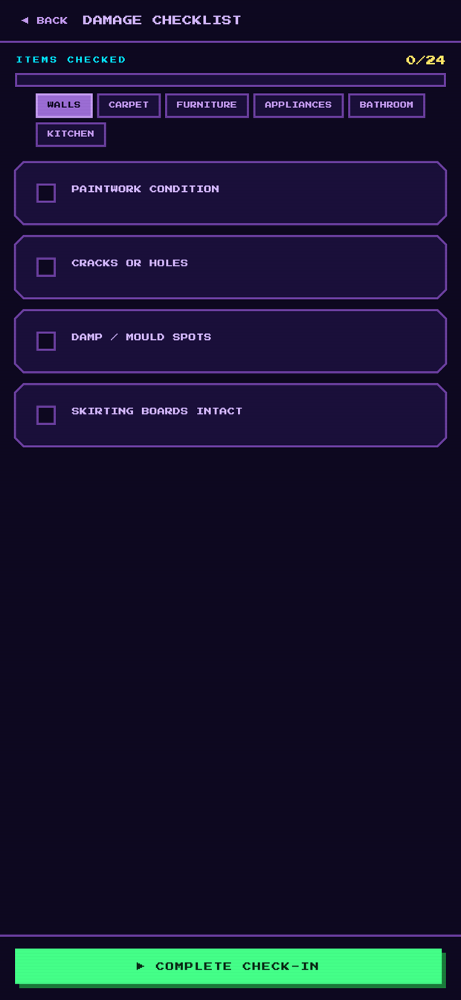
Damage checklist -
Step 07
Seal it
COMPLETE CHECK-IN asks first, because sealing is one-way: no more photos against this move-in, no more checklist edits, ever. That permanence is the point — it is what stops “move-in photos” from appearing months into a dispute.
In a shared flat, every other flatmate has to agree it is complete before it will seal. If someone has gone quiet, the household owner can seal anyway — and the evidence pack records in writing that they did.
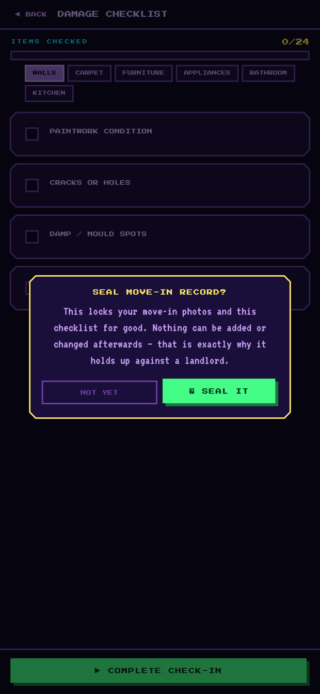
Seal move-in -
Step 08
What you are left holding
The audit becomes a closed record: how many photos it holds, when it was sealed, and no camera anywhere on the screen.
From here the flat looks after itself. Log repairs and replacements in the LIVING DIARY as they happen, and when you leave, MOVE-OUT AUDIT replays your own move-in shots one at a time so you can mirror them — then packs the lot into a PDF you can hand to a deposit scheme.
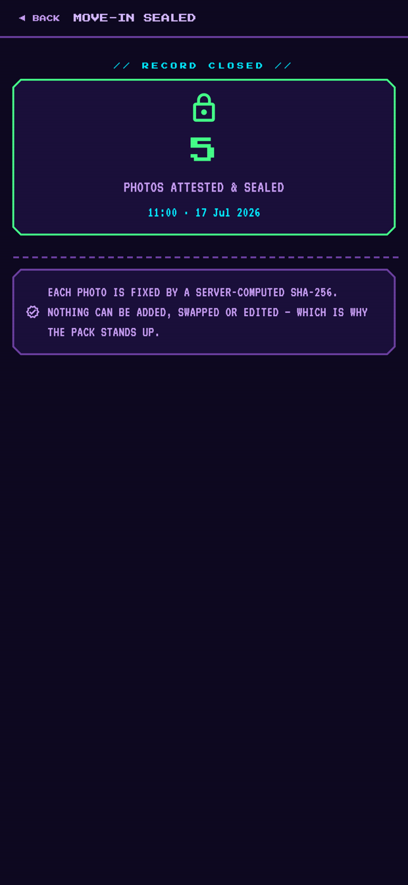
Record closed
One more time, because it is the only irreversible thing here. Sealing cannot be undone, and neither can deleting your account. Everything else in rm8tes you can edit, retake or change your mind about.
Part 04
The move-out audit
The day you hand back your keys, not before. rm8tes pulls up your move-in photos one at a time and asks you to retake the exact same shot, so the two sit side by side in your evidence pack — an argument about what changed has two photos to answer to, not your word against theirs.
You need a sealed move-in audit first (Part 03) — there is nothing to mirror against otherwise.
-
Step 01
Two ways in
From home, MOVE-OUT AUDIT runs on whatever flat is currently active. Already archived the flat (Part 05)? Tap its card instead and choose MOVE-OUT AUDIT & PACK — the same screen, aimed at that one flat by name.
The intro screen counts your move-in photos and lays out the four steps: pull them up, retake each one from the same angle, pair them up, build the PDF. With nothing to mirror, BEGIN MIRROR FLOW stays dead until a move-in audit exists.
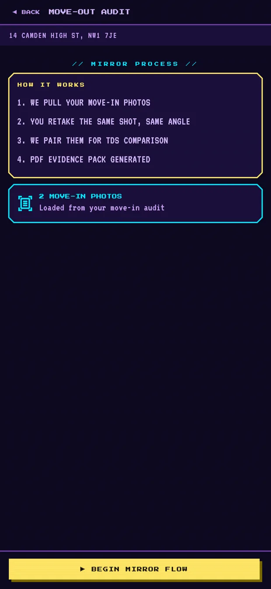
Move-out audit -
Step 02
Match the old shot
BEGIN MIRROR FLOW puts your move-in photo on the left and an empty frame on the right, both under the same prompt — FRONT DOOR — EXTERIOR & LOCKS, say. CAPTURE MIRROR SHOT opens the camera only, same as move-in; line the shot up as closely as you can and RETAKE if it is not close enough.
SKIP passes over a prompt with nothing to shoot — that slot is simply left out of the pack rather than blocking you. The progress bar counts down the same list your move-in audit used, so you always know how many are left.
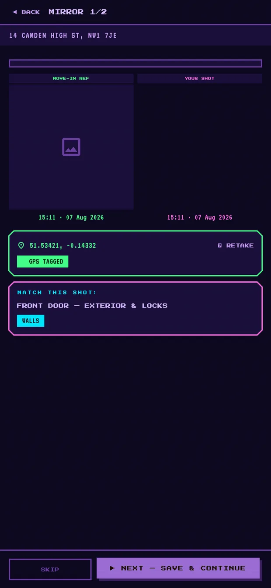
Mirror 1 of 2 -
Step 03
Finish & seal
Work through every prompt and the footer becomes FINISH & SEAL MOVE-OUT. Sealing is one-way, same as move-in and for the same reason: a photo taken after everyone has left and the keys are back is not a photo anyone should trust the date of.
You need at least one mirror shot to seal — an empty move-out cannot be closed. Sharing the flat? The seal only fires once every flatmate has agreed the round is done; the household owner can push it through if someone has gone quiet, and the pack notes in writing that they did.
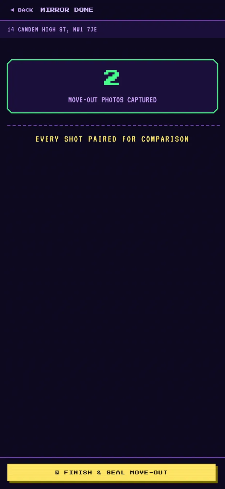
Mirror done -
Step 04
Your evidence pack
MOVE-OUT COMPLETE totals up what you have got — move-in photos, move-out photos, diary events — and offers GENERATE PDF. That builds the deposit dispute evidence pack: your photo pairs, the damage checklist from move-in, your maintenance diary, and the proof (Part 06) that none of it could have been quietly changed, by anyone, us included.
SHARE PDF hands it to whatever app you would use to email, save or print it. Added a diary entry or a deposit outcome since? REGEN rebuilds the pack to include it.
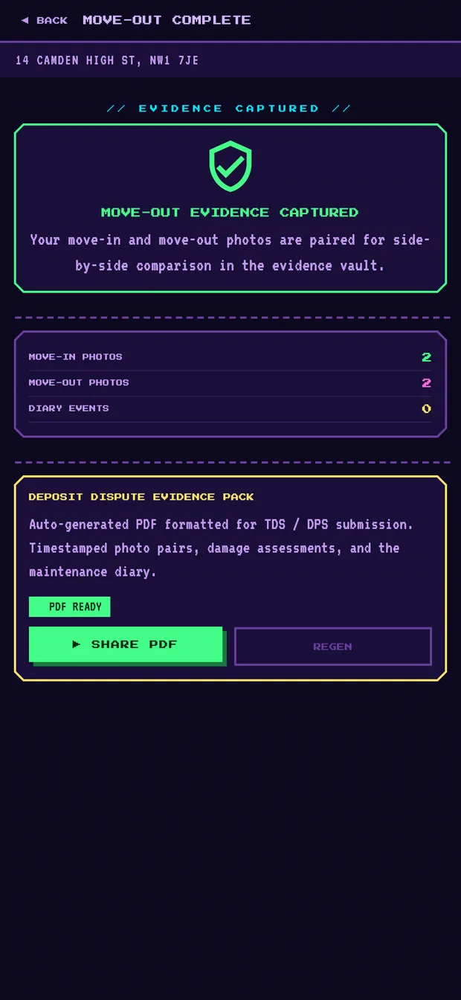
Pack ready
Sealing a move-out cannot be undone, same as move-in. If a flatmate has not agreed yet, it is worth waiting for them rather than reaching for the override just to move faster — it is exactly the kind of thing a dispute reads back later.
Part 05
Recording your deposit outcome
Where the money actually went, on the record, once you know. This only exists once a flat has been archived — because the moment you move out, the honest answer is always “don’t know yet”: a deposit can legally take up to ten days to sort out once the amount is agreed.
-
Step 01
Archive the flat
Tap your ACTIVE PROPERTY card on home — the one from Part 03 — and choose MOVE OUT — ARCHIVE. It moves to your archive; nothing is deleted, and every photo and record stays exactly where it is.
The moment you confirm, rm8tes opens a deposit record for you automatically, set to AWAITING. You do not have to do anything with it yet.
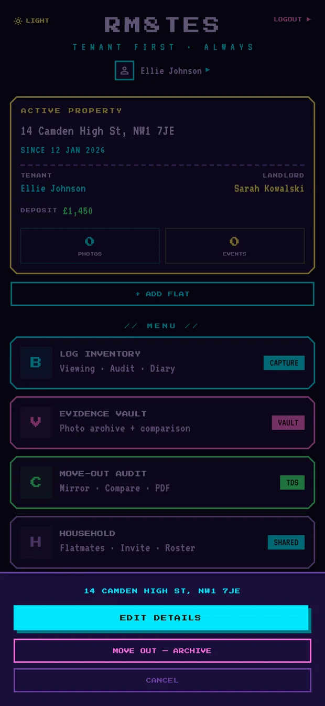
Manage your flat -
Step 02
Confirm, then find it again
“Move out of this flat?” is the only check — ARCHIVE and it is done. Back on home, ARCHIVED (1) unfolds every flat you have left, each showing its address and current deposit status. Tap one to reopen its sheet.
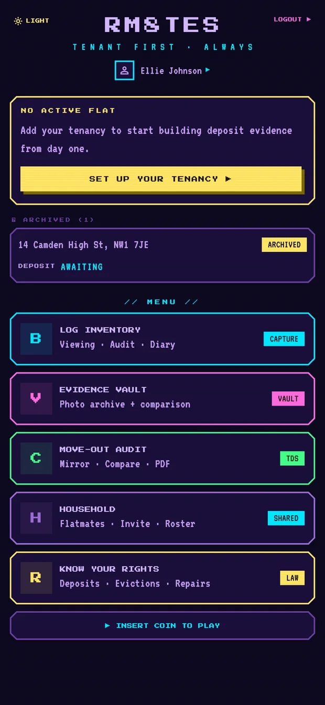
Filed under archived -
Step 03
Four ways into a closed flat
The archived card’s sheet is the only door left into that flat’s evidence: DEPOSIT OUTCOME, MOVE-OUT AUDIT & PACK, EVIDENCE VAULT, LIVING DIARY. Tap DEPOSIT OUTCOME to say what happened to the money.
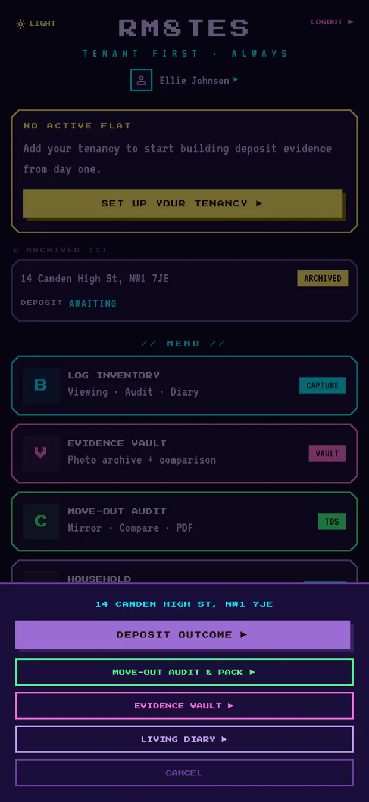
Archived flat, four ways in -
Step 04
Say what happened
AT RISK shows the amount you set at move-in. Below it, four choices. STILL WAITING and IN DISPUTE stay open and editable for as long as things are unresolved — change your mind as often as you need to. RETURNED IN FULL and PARTLY RETURNED are the two settled outcomes, and they are permanent: pick one only once the money has actually landed.
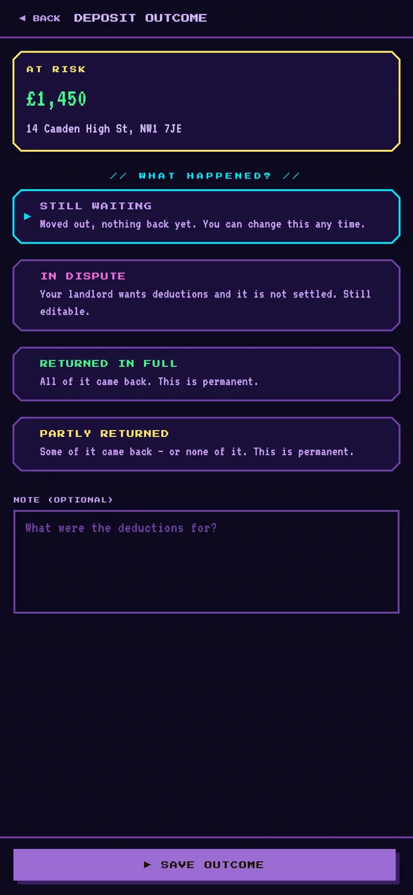
What happened? -
Step 05
The permanent bit
Choosing a settled outcome opens two more fields: HOW MUCH CAME BACK — it cannot be more than what was at risk, and RETURNED IN FULL has to mean the full amount, so pick PARTLY RETURNED if even a penny was kept back — and WHEN, a date picker. A note is optional, and worth using if anything was deducted: the reason sits right next to the amount from then on.
Before you save, rm8tes says it plainly: this is permanent. A settled outcome is hashed and anchored to Bitcoin with the rest of your evidence (Part 06 explains what that means), and it can never be edited afterwards — only corrected by adding a new entry on top, with both staying visible.
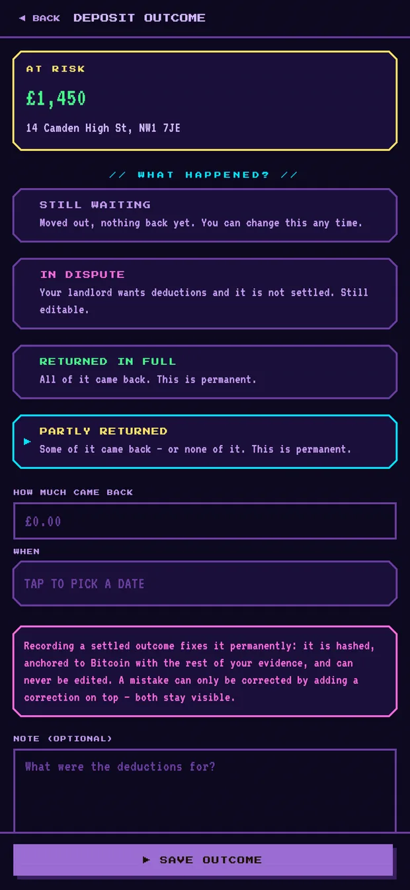
Settling the record -
Step 06
The record, and correcting it later
SAVE OUTCOME writes it. A settled outcome shows as a green ATTESTED card with the date, any note, and a RECORD HASH — a short code that is this exact record’s fingerprint, the same idea Part 06 walks through for your photos.
Typed the wrong amount, or the wrong date? CORRECT THIS RECORD opens a fresh form. The old entry does not vanish — it drops into an amended list below, marked SUPERSEDED, so anyone reading the pack later can see exactly what changed and when.
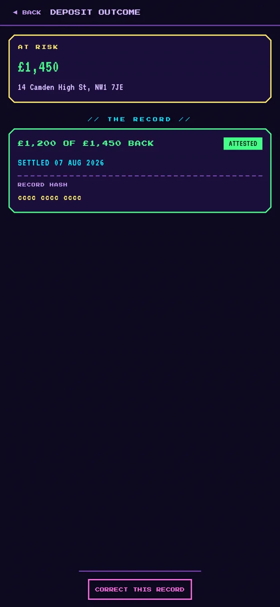
Settled & attested
STILL WAITING and IN DISPUTE are not final — change them whenever the situation moves on. RETURNED IN FULL and PARTLY RETURNED are: check the amount and the date before you save.
Part 06
Understanding your evidence pack
You do not need to read this section to use rm8tes — your photos are protected whether you understand any of it or not. But “hash” and “Bitcoin” turn up on screen and in your PDF, and unexplained jargon is exactly what makes an evidence pack feel intimidating instead of reassuring. So here it is in plain English — no technical background required.
-
Step 01
What’s actually in the PDF
Five parts, in order: your move-in and move-out photos side by side, the damage list you made on day one, your maintenance diary, and then two sections that do the trust-building — one saying “here is proof we did not touch your photos,” the other saying “and here is proof you do not even have to take our word for that.” Those last two are what the rest of this page explains.
-
Step 02
The fingerprint on every photo
Imagine every photo you take gets its own fingerprint — a long code, a bit like a barcode, that belongs to that exact photo and no other. Change one single dot in the picture, even by accident, and the fingerprint comes out completely different. Leave the photo exactly as it was, and the fingerprint always comes out exactly the same.
That is the whole trick. A fingerprint that still matches is proof the photo is pixel-for-pixel the one that was taken — nothing swapped, nothing touched up, nothing quietly redone. And it is not your phone grading its own homework: the rm8tes server works the fingerprint out for itself, from the file it actually received, and refuses to save anything that does not match what your phone said it sent.
// SEE IT YOURSELF // Open any photo in your EVIDENCE VAULT and scroll to the bottom. That green HASH VERIFIED BY SERVER badge is this, already done for you — the fingerprint has been checked, and it matches.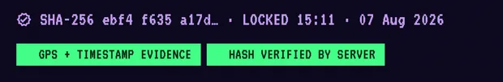
The bottom of any photo in your vault -
Step 03
The bit that proves when, not just what
A fingerprint proves a photo has not changed. It does not, by itself, prove when it was first taken — and “when did you actually take this” is exactly what a deposit argument turns into. So once an hour, rm8tes takes every fingerprint made in that hour and writes them into something nobody — not you, not your landlord, not rm8tes — can secretly go back and rewrite: the Bitcoin blockchain, using a free tool called OpenTimestamps.
Think of it like getting a letter postmarked at the post office. Once that stamp is on it, nobody can pretend it was written on a different day. Bitcoin’s version of a postmark works the same way, except instead of one post office keeping the record, it is checked and copied by thousands of computers all over the world at once — which is exactly why nobody can quietly change it afterwards, us included.
// NO, YOU DON’T NEED ANY BITCOIN // You never buy, hold or spend anything. rm8tes just borrows its ledger — the one part of the internet nobody owns and nobody can edit — as a permanent, public place to store the date.This normally takes a few hours to fully lock in. Until then, your evidence pack will say a record is anchored but not yet confirmed — that is completely normal, not a fault. Once confirmed, that record’s date is fixed, in public, forever.
-
Step 04
If anyone ever wants to check it themselves
You will probably never need this — it is here so you know the option exists, not because we expect you to use it. The back of your evidence pack prints every fingerprint in full and lays out the exact steps for checking them, using free tools that talk directly to Bitcoin and never to rm8tes. That is the whole point of doing it this way: if we ever changed something, that check is what would catch it, not your word against ours.
If a dispute ever goes as far as a solicitor or a scheme adjudicator, that is the part of the pack they would use. You do not have to understand it yourself for it to hold up.